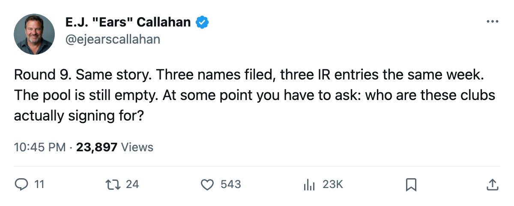
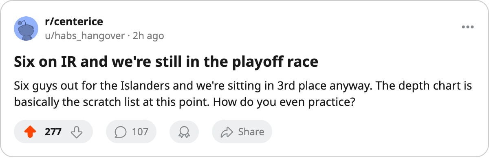

Sign-and-Injure, Round 9: 3 Filed Nov 14, 3 on IR Today. The Pool Still Reads 0.
Columbus, Philadelphia and New York filed depth deals on Nov 14. Every one hit the shelf on Nov 17. The market has no bodies left to sign.
 E.J. "Ears" CallahanInsider · The Hot Stove
E.J. "Ears" CallahanInsider · The Hot Stove
Sign-and-Injure pattern: 100% IR hit rate across 9 rounds, free-agent pool reads 0

Three clubs filed contracts on Nov 14. All three players landed on the injured list as of today. The pattern hasn't missed a round in six weeks.
 Columbus Blue Jackets signed Hannes Hyvonen68 at $267,890. He's carrying a groin designation, onset Nov 17, return Dec 6.
Columbus Blue Jackets signed Hannes Hyvonen68 at $267,890. He's carrying a groin designation, onset Nov 17, return Dec 6.  Philadelphia Flyers signed
Philadelphia Flyers signed  Marcus Ragnarsson78 at $353,570. Abdomen, onset Nov 17, return Nov 21.
Marcus Ragnarsson78 at $353,570. Abdomen, onset Nov 17, return Nov 21.  New York Islanders signed Justin Papineau72 at $180,990. Foot, onset Nov 17, return Dec 12.
New York Islanders signed Justin Papineau72 at $180,990. Foot, onset Nov 17, return Dec 12.
The three contracts carry an average overall grade in the mid-60s to low-80s, fourth-line depth you do not sign in November if your roster is whole. All three carry onset windows of a single day: Nov 17, the date of the IR entry.
The free-agent pool reads 0 names. There is no one at 90, no one at 85, no one at 80. The pool has been empty since the pattern began, and these clubs are still filing deals with men who cannot play.
New York's bench is the shortest in hockey
New York Islanders now carries 6 players on the injured list, the most in the league. Papineau joins Mika Tirkkonen75 (knee, return Nov 25),  Mariusz Czerkawski76 (elbow, return Dec 7),
Mariusz Czerkawski76 (elbow, return Dec 7),  Radek Martinek72 (elbow, return Dec 21),
Radek Martinek72 (elbow, return Dec 21),  Shawn Heins67 (leg, return Dec 18), and
Shawn Heins67 (leg, return Dec 18), and  Pierre Dagenais66 (wrist, return Feb 7). The Rangers read 9-6-2 and 22 points, good for 3rd in the Atlantic Division. They are doing it 6 men short of a normal roster.
Pierre Dagenais66 (wrist, return Feb 7). The Rangers read 9-6-2 and 22 points, good for 3rd in the Atlantic Division. They are doing it 6 men short of a normal roster.
The Islanders sit at $61.02M in payroll and $2.77M per point, 8th-best in the league. Their attendance is 13,279, second-worst among the 30 clubs. Second-shortest bench, second-thinnest building. You can see where the money went.
What the empty pool means for the trade deadline
The deadline sits 122 days away. The only confirmed asset movement this season was the COL-DET package, 4 players and 2 picks, filed on Nov 9. The  Colorado Avalanche pool now sits at 8 picks, the most in hockey. The rest of the league holds 5 or fewer.
Colorado Avalanche pool now sits at 8 picks, the most in hockey. The rest of the league holds 5 or fewer.
If the free-agent pool stays empty through January, the only way to acquire a player who can help is via trade. And nobody has moved a meaningful piece since that Colorado deal. These clubs are filling roster minimums with bodies they already know are broken.
The pattern has now run through 9 rounds. Every batch of signings has produced an IR entry at a 100 percent rate. The league record shows no exceptions. The pool shows no supply. And the clubs are still filing.

